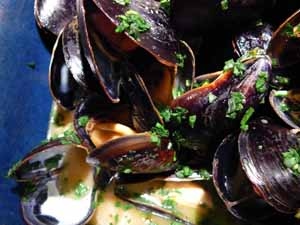

Mom's big mussels
Okay, call me obsessed, but I was back at Costco again today, for the second time in less than a week. And no, I’m sure I wasn’t paying any less than I would have been paying in our Strip District for similar products, and yes, I made some impulse buys, like a pair of Gloria Vanderbilt black jeans that fortunately are returnable. (Why does Gloria Vanderbilt make jeans, anyway, and who is she fitting them for?)
They had a gal giving out samples of some of the cheeses I was rhapsodizing about last week, although I do think when folks hand out samples they should know a little something about the products. The answer she gave to any of my questions was, “These cheeses are French!” and she personally hadn’t tasted any of them. The three she was distributing were all semi-soft, with edible rinds, like Brie or goat cheese, but all made of cow’s milk. I bought the one that has a green leaf embossed on the top and tastes a bit like Limburger ; my parents are visiting soon and my father likes strong cheeses.
I felt sorry for the fellow manning the seafood station because he was being completely ignored so I bought a 5-pound bag of mussels for our supper, at $1.99/pound. This may be hard to believe, but except for when I worked in catering, I have never cooked mussels and have never bought them for myself. I don’t even know if this is a good price.
I found a recipe in my big yellow Gourmet cookbook, that also happens to be on the Epicurious website for Spicy Thai Steamed Mussels. Although I know one wouldn’t normally serve bread with Thai food, one simply must have something to sop up the delicious juices in the bottom of the bowl so we had a baguette, too. I guess I can pretend I cooked one of those French/Vietnamese/Thai fusion meals, since we also had a spinach salad with vinaigrette dressing.
Spicy Thai Steamed Mussels
Serves 6 as a first course, 4 as a main course

- 5 pounds mussels (preferably cultivated)
- 1/3 cup lime juice
- 1 (14-ounce) can unsweetened coconut milk
- 1/3 cup dry white wine
- 1 1/2 tablespoons Thai red curry paste, or more, depending on spiciness of brand and personal taste
- 1 1/2 tablespoons minced garlic
- 1 tablespoon Asian fish sauce
- 1 tablespoon sugar
- 2 cups fresh cilantro sprigs – see note
Accompaniment: lime wedges
Scrub mussels well and remove beards. In an 8-quart wide pot combine lime juice, coconut milk, wine, curry paste, garlic, fish sauce, and sugar over high heat, stirring, 2 minutes. Add mussels, tossing to combine. Cook mussels, covered, stirring occasionally, until opened, about 5 to 8 minutes. (Discard any unopened mussels.) Chop cilantro and toss with mussels.
Serve mussels with lime wedges.
Note – Maybe everyone already knows this but I didn’t until I read it on the Dirty Sugar Cookies website; the stems of fresh cilantro are just as flavorful as the leaves so don’t discard them. All this time I had been picking the leaves off and throwing the stems away, like I do with fresh basil and parsley, but now I chop them up along with the leaves and use it all.
Comments
Yep, I use the stems in salsa, since there’s no need for leafy decorativeness in chopped-up sauce preparations!
I made a Tex-Mex meat loaf the other night and was too lazy to separate the stems from the cilantro. I threw the whole thing in the food processor. No wonder the meat loaf tasted so good!
That’s an excellent price for mussels and I’ve made that mussel recipe before — it’s wonderful!
This sounds like something I’d die for. Mussels are often cheap (at Wholey’s, for instance) but not that cheap!
Hi, ladies! Thanks for all the comments; one thing I forgot to talk about in my original post, though, was, delicious as this recipe was, and much as I love mussels, it was extremely tedious to sort through and scrub them, one by one. Mussels are relatively small, and I had a five-pound bag of them. I don’t know of any quick way to clean them other than going through them and discarding the ones that are open and scrubbing and de-bearding the others. I wouldn’t want to prepare mussels for a crowd!
Sometimes I’m careless and hasty when I clean mussels, and nothing bad happens. But it doesn’t save that much time to be careless and hasty, either; it’s still a process.
And sometimes when I make Thai curries I cut the coconut milk with soy milk, to make myself feel virtuous and healthful . . .
Hi, Abby; I used “light” coconut milk, although I didn’t read the ingredients on the can so I’m not sure what makes it light. I know “light” and nonfat half&half have corn syrup and other disgusting junk in them and I’m sure they’re much worse for you than plain cream.
As far as cleaning the mussels goes, I would just about be willing to do it again for our small family, but that’s about as many as I would want to sort and scrub, unless I had some help, or at least some company!
I rinse mussels and give them a quick scrub. I don’t bother hunting for barnacles or hidden dirt, and I’ve never had a grit problem.
I think light coconut milk is just regular coconut milk thinned with water. You’re probably better off buying the regular kind and thinning it yourself.
Add a comment